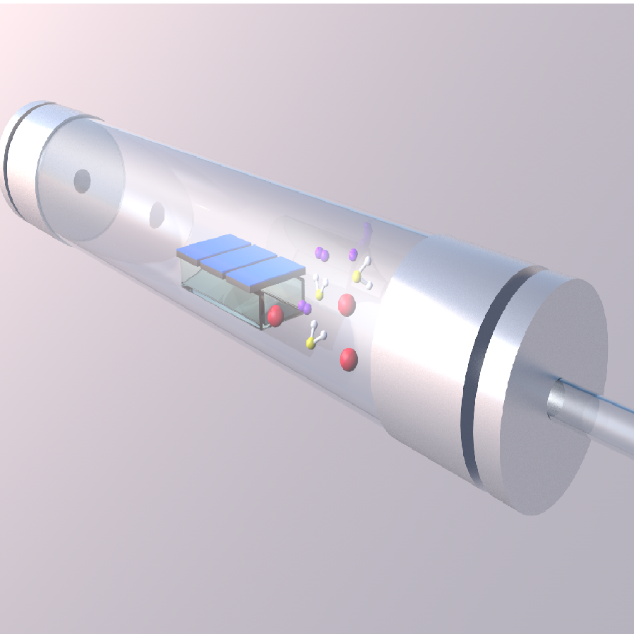
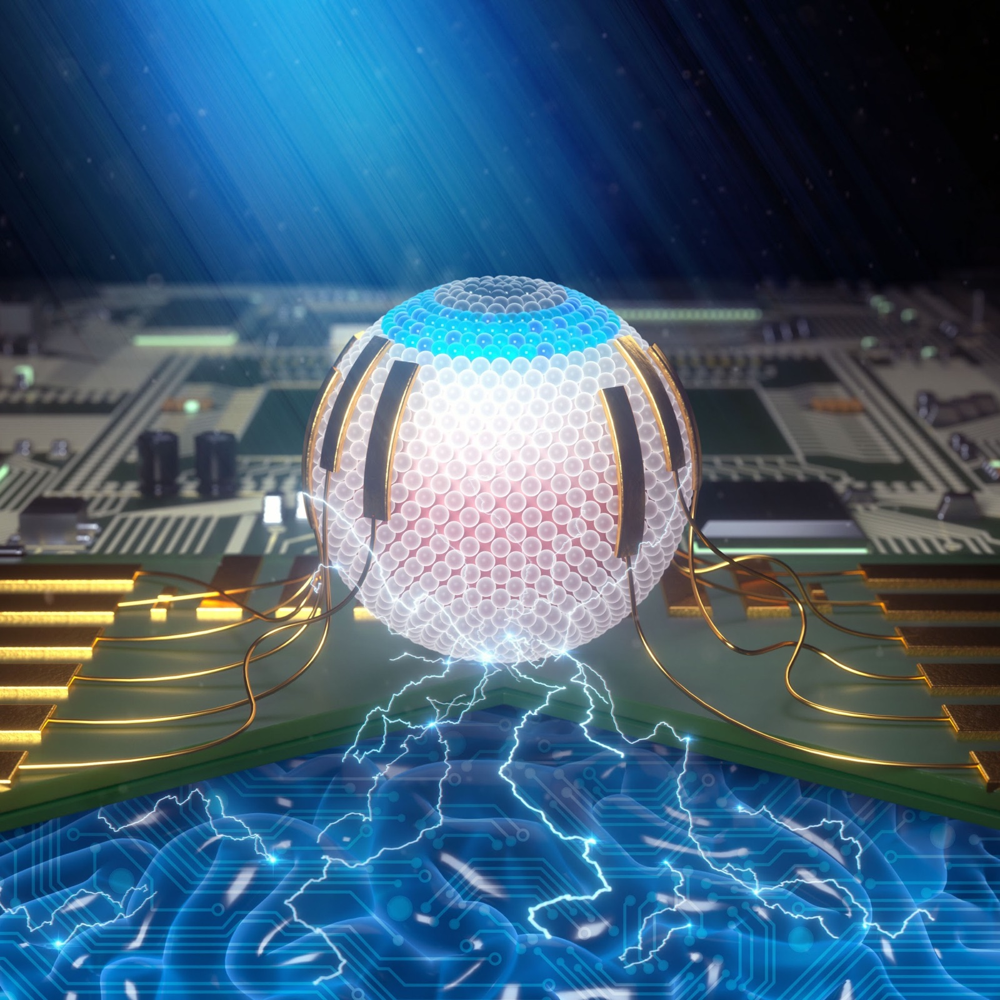
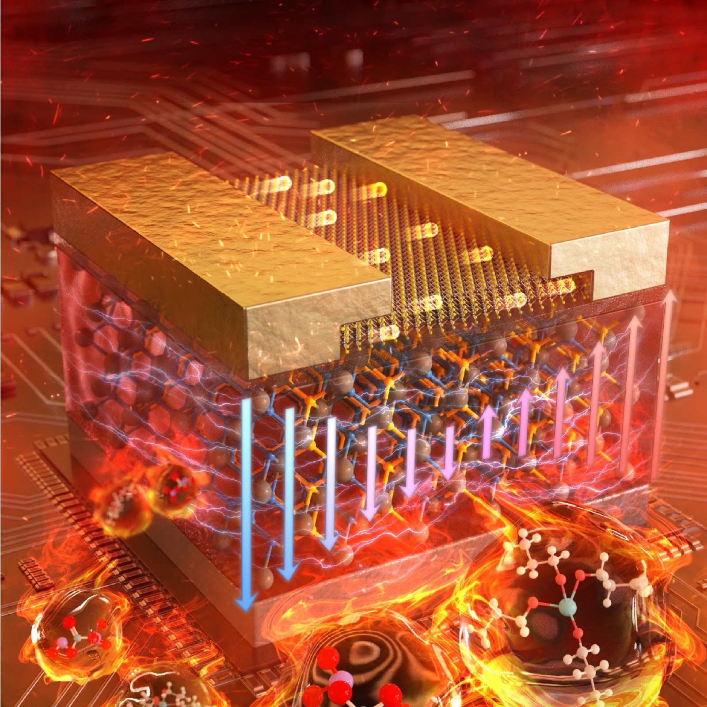
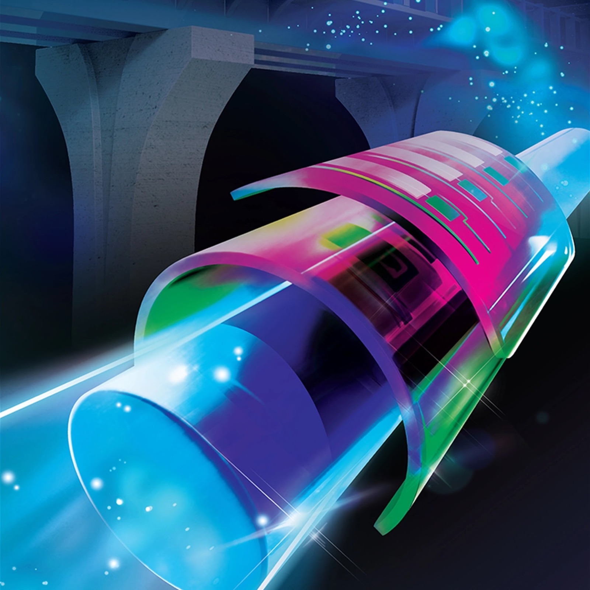

ONE 1aboratory
ONE 1aboratory is an abbreviation for overwhelming nano electronics laboratory.
We pursue research that consider three points (No. one, only one, and for everyone).
Our research interests are next generation semiconductors, neuromorphic engineering, optoelectronics, sensor systems, wearable/flexible electronics.






